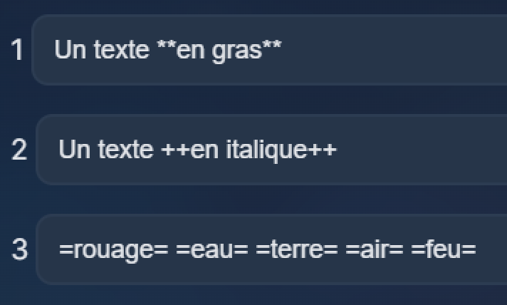
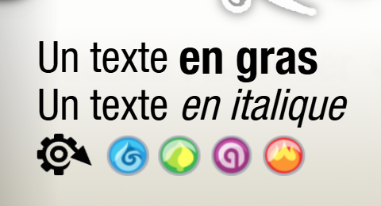
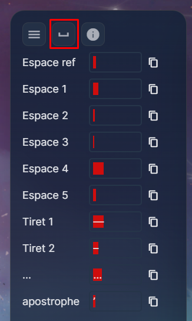

Wakfu Embelli
Un outil permettant de recréer et personnaliser les cartes Wakfu en meilleure résolution.
Liens
Wakfu Embelli Google DriveUn grand merci à Bastien Bassani, créateur de l'extension Eliacube, pour son travail monstre ainsi que pour la mise à disposition des assets utilisés dans cette application.
Sommaire
Avancement Fonctionnement Extentions L'interface Éditer une carte Icones, gras et italique Au pixel près VitesseAvancement
Fonctionnement Télécharger
Téléchargez le .zip de l'application, puis extraire son contenu. Vous trouverez, à côté de l'exécutable, plusieurs dossiers permettant de personnaliser son fonctionnement.
assets
Contient les différents éléments graphiques utilisés pour recomposer les cartes en HD. Vous pouvez les modifier pour créer vos propres cartes et effets visuels.
parametres
Contient les fichiers de configuration : éléments, icônes, raretés, types de cartes et différentes zones de texte.
extensions
Chaque extension possède son propre dossier. Pour une extension personnalisée, ajoutez également son icone dans assets/extensions/ en suivant les modèles existants.
Extensions Google Drive
Vous trouvez la quasi totalité des cartes dans le Google Drive. Téléchargez les dossiers présents dans "extensions/", et ajoutez les dans le dossier "extensions/" de Wakfu Embelli.
Les extensions déjà traitées sont disponibles dans "extensions_HD/"
assets
Contient les différents éléments graphiques utilisés pour recomposer les cartes en HD. Vous pouvez les modifier pour créer vos propres cartes et effets visuels.
parametres
Contient les fichiers de configuration : éléments, icônes, raretés, types de cartes et différentes zones de texte.
extensions
Chaque extension possède son propre dossier. Pour une extension personnalisée, ajoutez également son image dans assets/extensions/ en suivant les modèles existants.
L'interface
Une fois l'application lancée, vous pouvez sélectionner l'extension puis la carte que vous souhaitez éditer. Une barre de recherche permet de retrouver rapidement une carte en particulier.

Navigation
Liste des cartes
Taille des interfaces
Vue carte
Éditer une carte
Chaque élément de la carte est modifiable. L'interface d'édition, située à droite, est divisée en trois pages.
Titre, type, force, niveau et autres informations générales de la carte.
Modification et mise en forme de l'effet de la carte.
Modification et mise en forme du texte descriptif.
Deux modes sont à notre diposition :
Titre, type, rareté, force, niveau, pa, pm, pv, extension, illustration, copyright, effet, description.
Une liste de raccoucis permet de modifier position et taille de chaque texte.
Éditer une carte
Mise en page
Raccourcis
Icones, gras et italique
Pour mettre en gras, entourer le texte de "**"
Pour mettre en italique, entourer le texte de "++"
Pour ajouter une icone, écrire : =terre=, =eau=, =rouage=, etc
Exemple

Exemple - Rendu

Au pixel près
Plusieurs outils sont à notre disposition pour tenter d'être au plus proche du rendu original.
• Les apostrophes incurvés
• Les tirets (semi-)longs
• Les trois petits points (pas toujours, à voir au cas par cas)
• Différents espaces, avec des largeurs variés, sont disponibles
• Ajouter un "_" décale le texte de 3 pixels vers la droite (dans le futur, _a sera changé pour ne bouger que d'un pixel)
• Ajouter un "\" décale le texte de 3 pixels vers la gauche (souvent utile pour rapprocher une virgule de l'icone )
Caractères spéciaux

Icones Gras Italique - Rendu
Vitesse
Saut de ligne
Mise en page des titres
Le texte des effets et des description de chaque carte ont été récupérés automatiquement de otk-expert. Il faudra ensuite manuellement ajouter les fins de lignes, et corriger les icones, les erreurs, etc.
Un champ texte est disponible, pour rapidement ajouter les sauts de lignes. Écrivez la fin d'une ligne, puis tapez sur "Entrée", et un saut sera ajouter juste après ce texte (en enlevant l'eventuel espace qui suit). Le texte de fin de ligne devra être assez spécifique : mettre "un" risque d'ajouter un saut au mauvais endroit, pour peu qu'il y ait plusieurs occurence de ce mot.
Pour me simplifier la vie, je m'occupe d'une action à la fois, pour toutes les cartes de l'extensions.
Ça me permet de zoomer à un endroit précis de la carte, et de ne plus la bouger. L'exemple ci-dessus
montre la mise en forme des titres des cartes, les unes après les autres.
Quelques raccourcis utlisés durant la vidéo :
• Ctrl+Alt+Fleche pour passer d'une carte à la suivante
• F1 pour passer à l'édition de texte (notamment pour corriger les apostrophes et les "É")
• F2 pour passer à la mise en page
• Alt+1 pour sélectionner le premier champ de texte (correspondant au titre) en cas de perte de focus
• Ctrl+S pour sauvegarder mon avancée